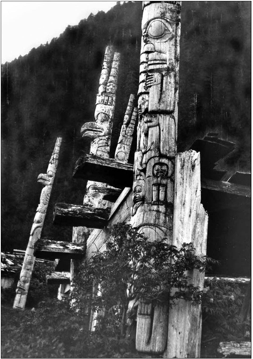
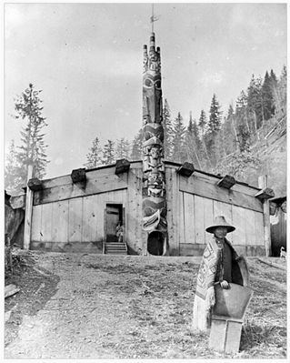
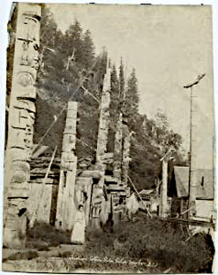
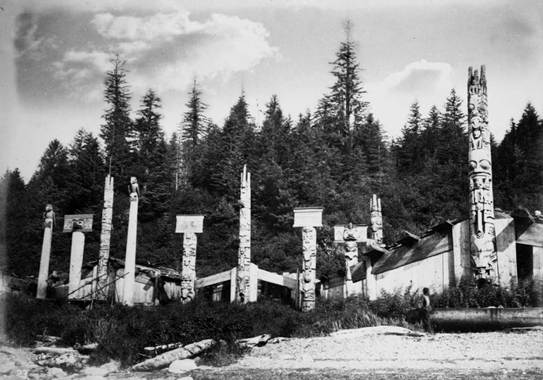
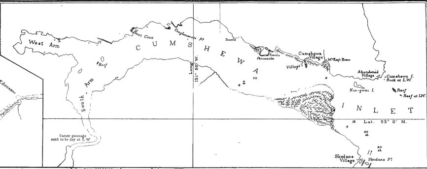
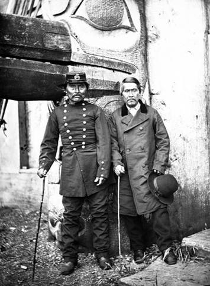
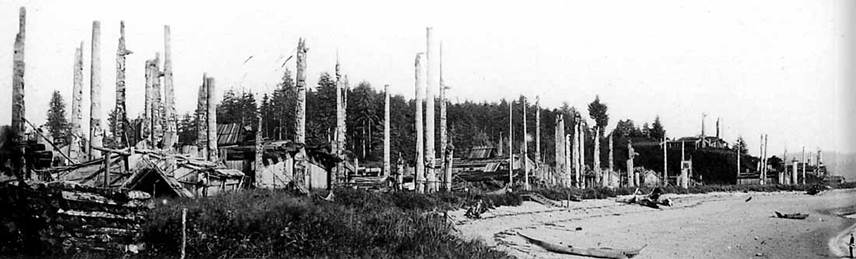
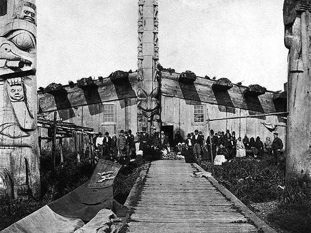
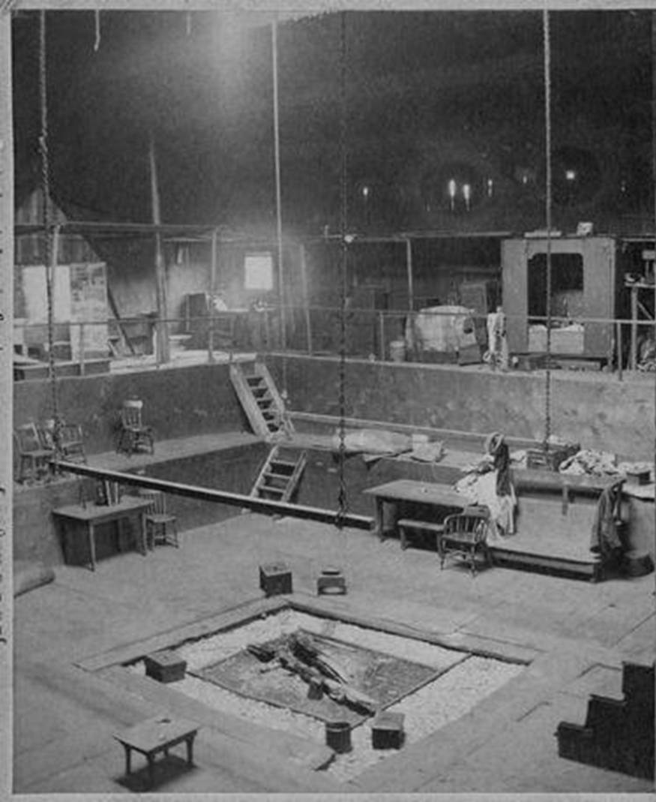

Haida Villages and Chiefs
Background mentioned in Thomas Russell’s diary
Thomas Russell’s arrival at Skidegate Inlet in 1870 occurred at the tail end of a time of significant and rapid change for the local Haida population. The Queen Charlotte Island Gold Rush of 1851-53 had prompted relocation of at least some of the villagers of Chaatl to the discovery site at what became known as Gold Harbour as they wished to take advantage of the activities there. Successive pandemics during the 1860s inflicted a severe reduction in the native population. This, coupled with a decline in fur trading activity, prompted consolidation and relocation of traditional villages on the west side of the islands to the Skidegate Inlet area during the late 1860s to be closer to their remaining relatives there.
In consequence, it appears that Thomas Russell met with a larger number of chiefs than could normally have been expected. He also encountered a changing cultural landscape with holdovers from the fur trading era and pressures from whiskey bootlegging by unscrupulous ship owners and traders.
Haida villages in the vicinity of Skidegate Inlet of relevance to and/or mentioned in the diary
The inhabitants of the various Haida villages were inter-related. The village of Chaatl on the northern shore of Buck Channel on west side of Moresby Island was founded by families of the Raven and Eagle moieties from a long-abandoned village known as “Pebble Town”, at Second Beach near Skidegate. In the 1850s Chaatl had a prominent chief with the personal name Wadatstaia: the chieftainship was accompanied by the traditional name ‘Nankilstas’ (“he whose voice must be obeyed”).
The Haida settlement of Sqai’-tao was developed adjacent to Gold Harbour in response to the short gold rush which the Haida wanted to benefit from. It is possible that Wadastaia relocated at least temporarily from Chaatl to Sqai’-tao during the rush.
Wadatstaia became known to outsiders as “Captain Gold” because he and his wife were reputed to be the first to find the gold -which prompted the 1851-3 gold rush - although others have also been credited with this.
Wadatstaia was the brother of “Chief Skotsgai” of Kaisun, the nearest major Haida village about 12 nautical miles to the south of Chaatl.
Thomas Russell encountered both these chiefs during his stay in Skidegate Inlet.

Haina village (New Gold Harbour)
In the 1860s epidemic survivors in Chaatl moved to the eastern end of Skidegate Inlet, mostly to a new village on Maude island (Haida: Xaayna Gwaay), there joining with refugees from village of Kaisun. The new village, built on an old site known as Xayna or Haina, was named Haina (also spelled Xayna), and was sometimes referred to as “New Gold Harbour”. It was apparently from this village that both captains Gold and Scotchguy came when visiting Russell at the Cowgitz mine.



In the 1890s, some 20 years after Thomas Russell’s departure, having suffered further epidemics of smallpox, measles, and other diseases, the survivors in Haina moved to the new mission town of Skidegate which had displaced the old Haida village of Hlgaagilda. Today the abandoned Haina village site is in the Khrana 4 Reserve.
Cumshewa village (also spelled Gumshaew by Russell)
Cumshewa is a former Haida village located on the north shore of Cumshewa Inlet. It is named for Cumshewa, an important chief during the maritime fur trade era.

The last few inhabitants of Cumshewa were encouraged to relocate to Skidegate in 1926. The location of the village is now within the KunXalas Heritage Site/Conservancy.
Thomas Russell paddled from Skidegate Inlet to the Hudson Bay store (McKay’s House) at Cumshewa in search of provisions in early 1871.

Skidegate village
According to tradition, the village was named after a village chief, Sg̱iida-gidg̱a Iihllngas, ‘Son of the Chiton’ whose name late 18th-century fur traders (sea otter pelts) recorded as Skitekat and Skittegate.


TipTwo Haida Chiefs
The chief at the left wears a sailor’s cap of the type commonly worn by marines of the British Royal Navy since the nineteenth century, identifiable by the brass badge consisting of a globe surrounded by laurel branches and surmounted by a crown and lion. He also wears a close-fitting military topcoat with two rows of nine metal buttons spanning his torso from collar to waist; this too was a style of jacket commonly worn by the Royal Marines. Behind them, a raven’s beak projects from a monumental carved and painted totem pole, identifying the house as that of Paul Nanadjingwas, possibly the man at the left in the photograph.
Image 42263, American Museum of Natural History Library Source Image 42263, American Museum of Natural History Library
Old Massett village
The village Thomas Russell called Masset in his diary is now called ‘Old Massett’, located 2 kilometers north of the current town of Masset. The name Masset is derived Maast Island, situated in the inlet about three miles above the village, this island believed to have been named after an early european sailor who was buried there. The Haida name for the village is “Ut-te-was” meaning “white slope town”, possibly after the banks of white broken shells from middens in the vicinity. Dawson states that in 1878 the village consisted of about 20 houses, with about 40 totem poles.
The Hudson Bay Company operated a post at Old Massett from 1869 -1898 and it is that post to which Russell paddled from Skidegate Inlet in search of provisions in early 1871.

Thomas Russell’s diary notes that 22nd/23rd April 1871 he slept in the house of Chief ‘Wee ha’. (otherwise spelled ‘Weah’ and ‘Wiah’). Edward Dossetter photographed the exterior of this house in 1881 and Richard Maynard the interior of it in 1884.


References
http://massetbc.com/visitors/old-massett/
https://en.wikipedia.org/wiki/Chaatl
https://en.wikipedia.org/wiki/Cumshewa,_British_Columbia
https://en.wikipedia.org/wiki/Haina_(Haida_village)
https://en.wikipedia.org/wiki/Kaisun_(Haida_village)
https://en.wikipedia.org/wiki/Old_Massett
https://en.wikipedia.org/wiki/Skidegate
https://en.wikipedia.org/wiki/List_of_Haida_villages